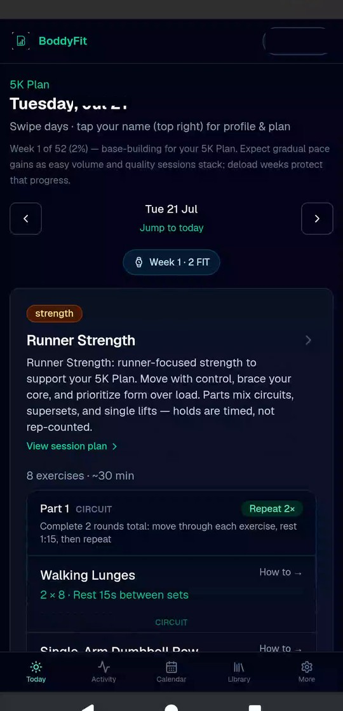

Dual coach calendar
Runs, strength, and mobility across a long plan — swipe weeks, open any session, track percent complete.
BoddyFit
Run + Gym Coach · Android
A full coaching app on your phone: multi-week plans, day-by-day sessions, strength and mobility, libraries, activity insights, and optional watch sync via Health Connect — offline-first.
Android · Capacitor · by Bodkin Interactive

Real screens from the Android build — Today through libraries, stats, and sync-ready activity.
Tap a screen to enlarge · Swipe to browse →
Build a plan once. Train every day. Review and sync when you want.
Choose a goal — 5K, 10K, Half, Marathon, or general fitness — plus equipment and schedule.
Get a multi-week calendar (up to 52 weeks) with runs, strength, and mobility on one schedule.
Swipe days, track week progress, open structured sessions — not just “run X km.”
Log activity, see summaries and race estimates, optionally import watch data via Health Connect.
Practical coaching on device — beginner to advanced. No cloud coaching account required.
Runs, strength, and mobility across a long plan — swipe weeks, open any session, track percent complete.
Hill repeats, easy runs, circuits, and mobility with pace, RPE, rest, and how-to cues.
Exercise library by muscle group, plus a running library for pacing and execution guides.
Weekly distance charts, all-time totals, and race estimates from your baseline pace.
Use the week button on Calendar to download that week’s runs for your watch workflow.
Import activities, view metrics when available, and link them to planned sessions.
Watch data can reach BoddyFit. Maps and Garmin cloud downloads cannot.
Android app from Bodkin Interactive — coaching that stays on your device.
Sideload / direct Android build via Bodkin Interactive. Play Store listing can follow — contact us if you want early access.